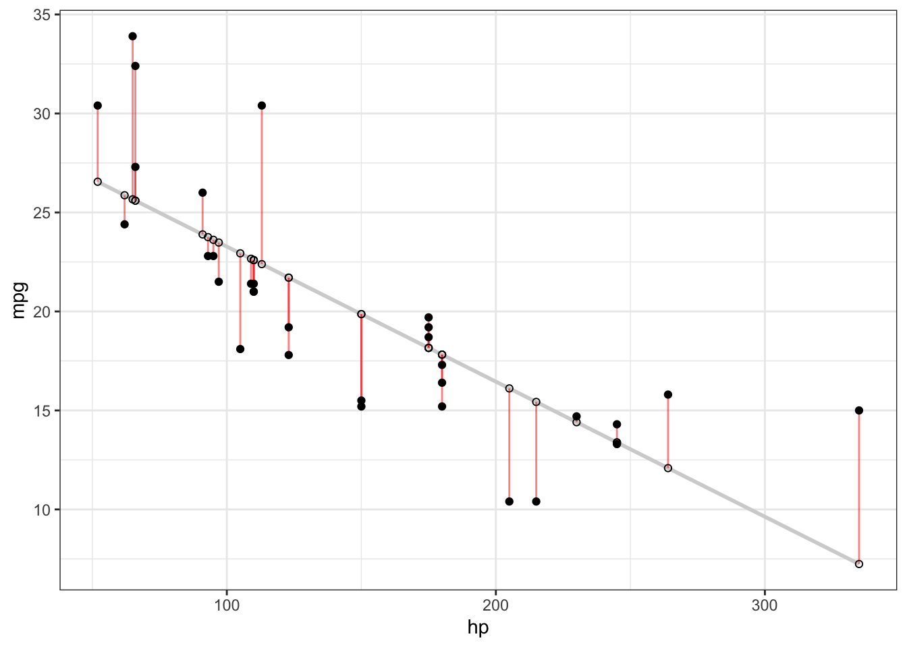
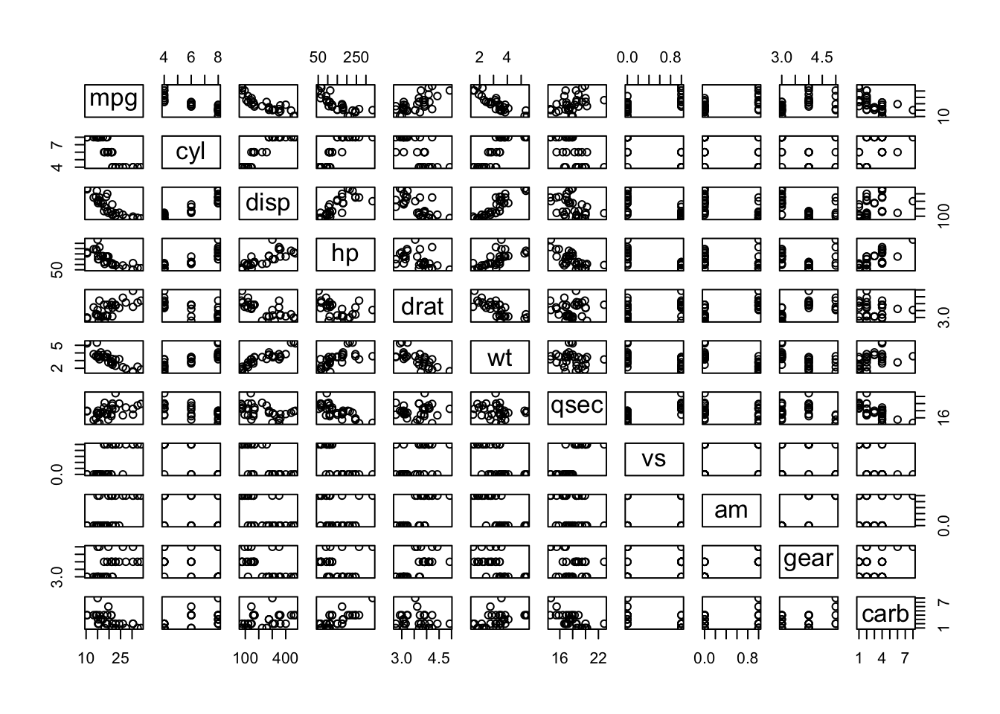
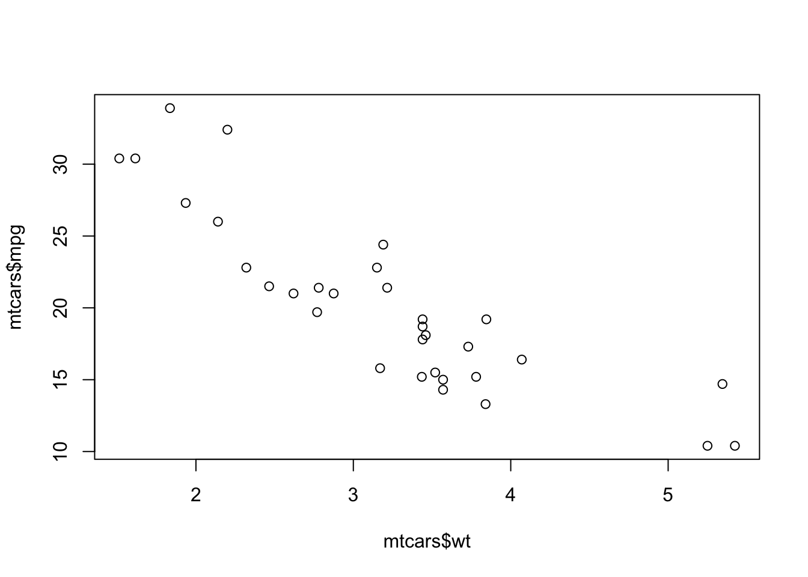
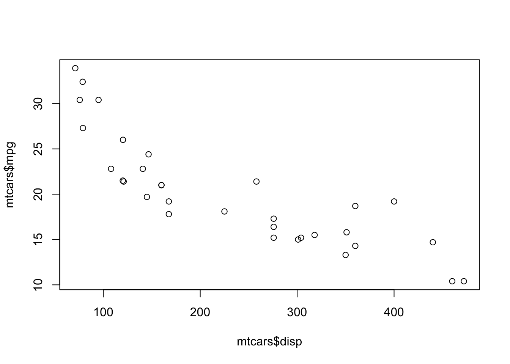
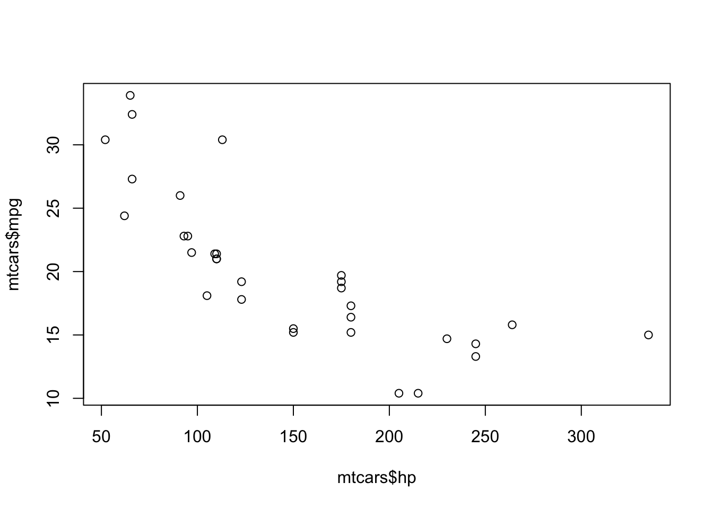
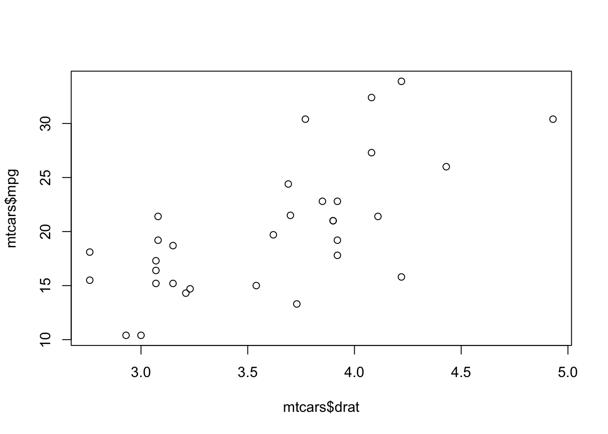
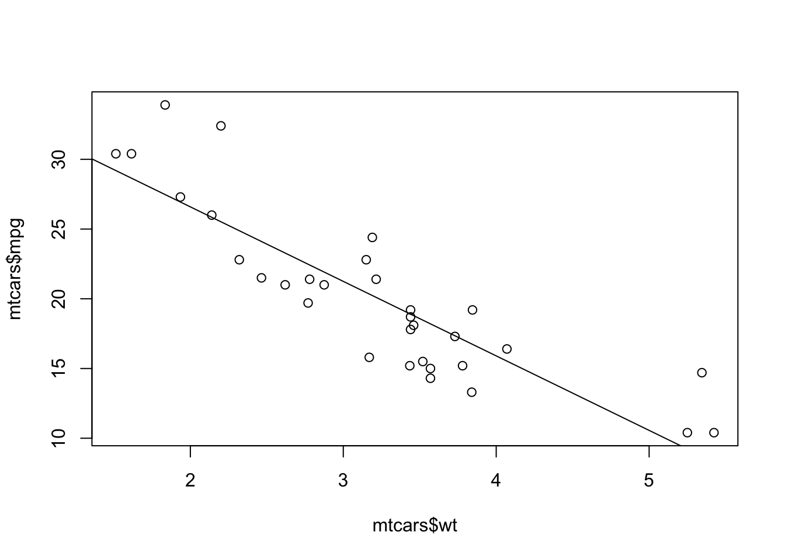

Chapter 2 Walkthrough
2.1 What R you talking about?
R is a programming language that is popular among mathematicians, scientists, staticians, and many other professional careers that need to analyze and understand large amounts of data. R and Python are the two most popluar languages for working with data. If you plan on going into a STEM field or plan to do any research you will most likely need to have an understanding of how to program in one of these two languages. Now is a great time to learn how to analyze data programmitically.
2.2 Walkthrough
2.2.1 R Basics
We will start by playing around on the Console. The console is in the lower left portion of the screen and should have a line that is blank except for a > symbol. Place your cursor next to the > to start typing inputs in for R to evaluate. R can be used as a basic calculator. Try typing some mathematical expressions then press enter and R will evaluate them.
Follow along by typing the following commands into the R console.
3 + 4## [1] 71/3## [1] 0.33333332.5 * 3## [1] 7.5Nothing too impressive yet but R can do so much more. Think of a mathematical function and try evaluating an expression.
sqrt(64)## [1] 8cos(60)## [1] -0.952413Oops, we just calculated the cos of 60 radians! Let’s convert radians to degrees.
cos(60*pi/180)## [1] 0.5So far we’ve seen how R can function as a calculator but R can do so much more. Before we start working we need one more concept that will help us in our calculations. The programming concept of variables. A variable in programming acts as a bucket to hold a piece of data for later use. The benefit of using a variable is that we can set it equal to a value and use that value as many times as we want.
# This line is a comment and will not be interpreted by R
# We use comments to help explain what our code is doing, whatever comes after the # is ignored.
# The syntax for a variable is as follows var_name <- some_value
a <- 5
# Notice when you run this chucnk nothing prints out.Now we can use a as many times as we want.
a## [1] 5a*3## [1] 15b <- a+3b## [1] 8That should be enough R for now. Lets do some linear regression.
2.2.2 Linear Regression with MTcars
Follow along via the R console. Our goal with the walkthrough is to look at correlation between variables and use linear regression to predict or infer meaning in the data. Let’s start by looking at all the datasets that come installed in R. The code below should open another tab with a list of available datasets.
data()We will start by looking at some relationships between variables in the mtcars dataset. Try the following code to learn more about the dataset.
?mtcarsNotice that we get the definitionn of each of the variables included in the data set as well as the number of rows and variables. However, we do not get any examples of the data. Now let’s take a look at a subset of the data.
head(mtcars)## mpg cyl disp hp drat wt qsec vs am gear carb
## Mazda RX4 21.0 6 160 110 3.90 2.620 16.46 0 1 4 4
## Mazda RX4 Wag 21.0 6 160 110 3.90 2.875 17.02 0 1 4 4
## Datsun 710 22.8 4 108 93 3.85 2.320 18.61 1 1 4 1
## Hornet 4 Drive 21.4 6 258 110 3.08 3.215 19.44 "rval" 0 3 1
## Hornet Sportabout 18.7 8 360 175 3.15 3.440 17.02 0 0 3 2
## Valiant 18.1 6 225 105 2.76 3.460 20.22 1 0 3 1Now we will try to select a variable to predict the mpg of a car. Before we get into the analysis, we need to have a quick review of linear regression. One of the most common types of linear regression is the Least Squares Regression (LSR). The goal with LSR is to find the line that minimizes the residuals between the points in the data and the LSR line. Remember that the residuals are the difference between our predicted value vs the actual. In the plot below the residuals are shown as the red line from the actual data point to the predicted value on the line.  The output of Least Squares Regression is a formula. In single variable regression the formula should look very similar to a typical slope-intercept form of an equation. \[y = \alpha + \beta \cdot x\] where \(\alpha\) is the y-intercept of our LSR line and \(\beta\) is the coefficient of our independent variable also known as the slope. Remember that intuitively, \(\beta\) is the average increase or decrease for our dependent (y) variable when our independent (x) variable changes by one unit. R will do all of the work for us but it is useful to remember how to calculate both \(\alpha\) and \(\beta\).
\[\beta = r \cdot \frac{S_y}{S_x}\] where \(r\) is the correlation coefficient between \(y\) and \(x\), \(S_y\) is the standard deviation of the \(y\) variable and \(S_x\) is the standard deviation of the \(x\) variable.
\[\alpha = \overline y - \beta \cdot \overline x\] Now we have the necessary equations to allow us to find the LSR line for a set of data.If we had too, we could now compute the equation of the line of best fit using the two formulas above. Before we find the regression formula we need to find a variable that correlates well with our independent variable, mpg. OUr first task is to get an overview of how each variable correlates with the mpg variable. A pairplot will give us a visual overview of the correlation between the variables.
pairs(mtcars)
cor(mtcars)[1,]## mpg cyl disp hp drat wt qsec vs am gear carb
## 1.0000000 -0.8521620 -0.8475514 -0.7761684 0.6811719 -0.8676594 0.4186840 0.6640389 0.5998324 0.4802848 -0.5509251plot(mtcars$wt, mtcars$mpg)
plot(mtcars$disp, mtcars$mpg)
plot(mtcars$hp, mtcars$mpg)
plot(mtcars$drat, mtcars$mpg)
Lets use some variables to help us calculate \(\alpha\) and \(\beta\).
# r can be calculated using the cor() function
r <- cor(x = mtcars$wt, mtcars$mpg)
# sd() calculates the standard deviation
sx <- sd(mtcars$wt)
sy <- sd(mtcars$mpg)
beta <- r*(sy/sx)
beta## [1] -5.344472ybar <- mean(mtcars$mpg)
xbar <- mean(mtcars$wt)
alpha <- ybar - beta*xbar
alpha## [1] 37.28513Now because I’m evil I decided to wait until the end to show a shortcut to calculate the equation of the LSR line. The lm() function allows us to do all of the above steps, and more, in one step.
?lmmodel <- lm(mtcars$mpg ~ mtcars$wt)
summary(model)##
## Call:
## lm(formula = mtcars$mpg ~ mtcars$wt)
##
## Residuals:
## Min 1Q Median 3Q Max
## -4.5432 -2.3647 -0.1252 1.4096 6.8727
##
## Coefficients:
## Estimate Std. Error t value Pr(>|t|)
## (Intercept) 37.2851 1.8776 19.858 < 2e-16 ***
## mtcars$wt -5.3445 0.5591 -9.559 1.29e-10 ***
## ---
## Signif. codes: 0 '***' 0.001 '**' 0.01 '*' 0.05 '.' 0.1 ' ' 1
##
## Residual standard error: 3.046 on 30 degrees of freedom
## Multiple R-squared: 0.7528, Adjusted R-squared: 0.7446
## F-statistic: 91.38 on 1 and 30 DF, p-value: 1.294e-10We can plot the line on top of our scatter plot to see our handywork!
plot(mtcars$wt, mtcars$mpg)
abline(model)